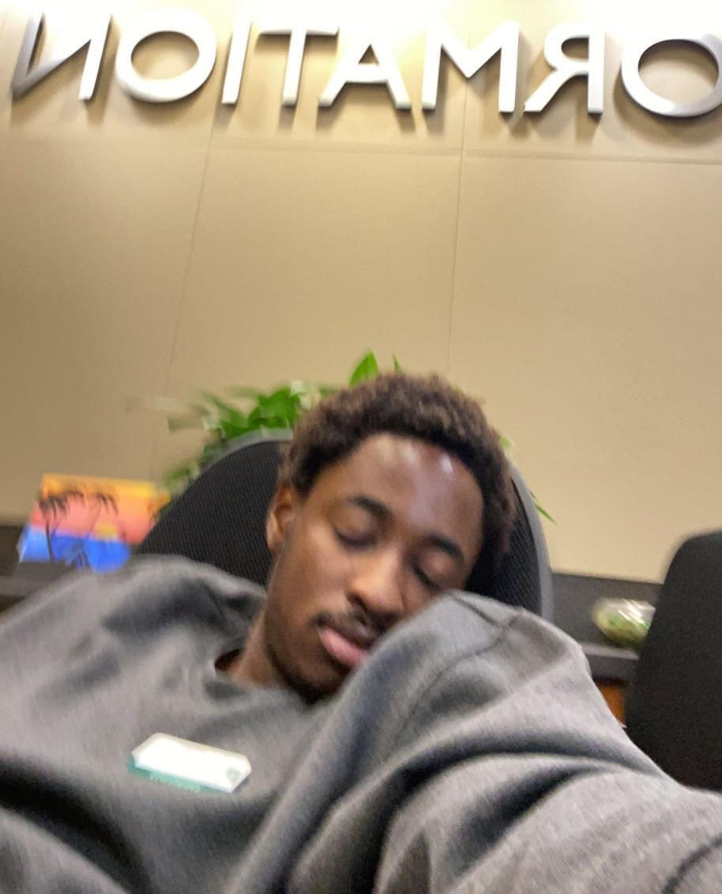

Introduction
Picture of me not sleeping at work.
* PERSONAL: International Student from Nigeria majoring in computer science because I'm too "soft" for medicine.
* PROFESSIONAL : I am currently a junior with no professional experience outside personal projects and coursework. Otherwise known as an entrepreneur.
* ACADEMIC: I moved to UNC charlotte from ECU sometime in 2020 ( I am horrible with time) because it was overwhelming. Been a computer science major since my freshman year.
* PROGRAMMING/SOFTWARE: I am a wizard with java, but that's about it. Currently self-learning python, JavaScript and html. If you consider MySQL a programming language then I'm technically a professional.
* CLASSES: (I looked over a lot of different profiles and we all took the same classes; the data structures, design implementation, intro to computer science, etc. I took them all because they were necessary). I will only be mentioning the electives I took as those have specific and particular motives behind them.
HLTH 101, Health Class: My parents didn't give me the "talk" so this was a good substitute.
PSYC 1101, Intro to Psychology: That Freud dude is fascinating.
ANTH 1101, Intro to Anthropology: This is just one of those weirdly beautiful classes everyone should take before they graduate (it was also easy).
MUSC 1018, Music Theory: I used to play instruments before I came to this country, this class really took me back to the fundamentals and that helped me improve a lot.
* GRADUATING: 2023
* STORY/ITEM: Mr. Von. I took your Introduction to Computer Science II class in my sophomore year and you made us do this same assignment then. I hadn't changed the contents of profile before today and redoing this felt like a really cringe time capsule experience. I literally had that mess of a bio for almost two years and I would've graduated without changing it if I didn't register for this class last minute.
* NotFromNc